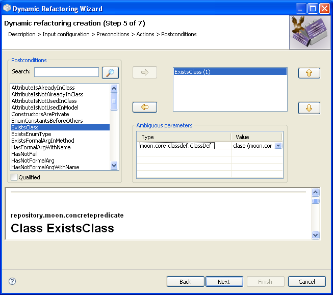

Creating RefactoringsCreating Refactorings
Creating RefactoringsCreating Refactorings
Menu item Create a new refactoring
A wizard will show up that will guide you through the whole process of creating a new custom refactoring.
You will see now the five steps that make up this wizard. You can cancel the creation progress at any
point, as well as go back to the previous step or forward to the following step (once all the needed fields
have been correctly filled in).
First step: "Create a new refactoring"
Name:
Type the name of the refactoring in this field. This value will identify the refactoring
within the refactoring selection window. It admits blank spaces and is cap-sensitive. If you are
using Java 1.6 the name may contain special characters such as accents or the character 'ñ'.
However it is not advisable, and you must not use them under Java 1.5 or older versions.
This field must be filled in before continuing.
Description: Type a brief description of what the refactoring does and why in this text area. You may use as many lines as needed. This field must also be filled in before continuing.
Image: You may specify here the image you want to
associate to the refactoring. If you push the button with the text "..." you
will be able to choose the image file. This field is not mandatory.
The ideal image size should have about 450 x 200 pixels. Although bigger images may be used as well, they won't show well within the interface windows. The formats accepted are:
GIF,JPG,TIFFandPNG.
Motivation: You must type a brief explanation on the motivation that could lead to applying the refactoring. This field must also be filled in.
On this page the inputs for the refactoring must be configured:
Second step: "Configure inputs"
The list on the right (Inputs) shows the entries that have already been selected for the
refactoring.
The list of available types for the new inputs appears on the left (Types).
If you want to add one o more inputs to the list on the right, select the declaring types you want them
to have and push the button with the arrow pointing to the right
(). If you need several inputs with the
same type, you may repeat the operation as many times as necessary.
To remove the selected input or inputs from the Inputs list, push
the button with the 'x' symbol on it ( ).
).
You may also reorder the inputs by using the buttons with the up and down arrows
( and
and  ).
The order they have when creating the refactoring will be kept across the plugin and its interface.
).
The order they have when creating the refactoring will be kept across the plugin and its interface.
You may have to fill in the following fields for every input you add:
Name: the name that will be used to identify the selected input later on within the wizard. It will also be used as a label on the refactoring window where the actual values for every one of the inputs must be entered. The name may contain accents but not blank spaces and it must be filled in for all the inputs.
Main: use this check box to select which one of the inputs should be used as the main input of the refactoring. You can only select one main input and it must have one of the specified types. Once the refactoring is built and running, the main input will be the one that the user selects on a Java editor or on a selectable tree on Eclipse.
From: if the value or possible values assigned to this input at runtime must be retrieved from another one, you should specify so by using this combo box. If the user should manually enter the value himself, leave this field blank.
Method: once you have selected a from value
for one of the inputs, this combo box will display the available methods that return either a collection
of values or a value of type assignable to the selected input.
Certain restrictions are checked before you are allowed to continue to the next step:
Exactly one main input must be specified.
The main input must be either one of the types
moon.core.classdef.ClassDef, moon.core.classdef.MethDec,
moon.core.classdef.AttDec, moon.core.classdef.FormalArgument
or moon.core.genericity.FormalPar or a subtype of one of them.
All the inputs must be given a unique name.
If a value for From is specified for an entry,
a value for the Method field must also be given.
In this page you can search for the correct input type by using the field of the top left. There you can write a regular expression
(Ejem.: moon.*)and then you have to push the button  . After that the list of the types actualize
it`s contents with the result of the search. Here are some rules to make a correct regular expresion:
. After that the list of the types actualize
it`s contents with the result of the search. Here are some rules to make a correct regular expresion:
logic operators:
Intervals of characters:
Intervals of predefined characters:
Characters:
Limits:
Cuantifiers:
Whenever a type is selected inside the list of left side (Types) the browser is update with the information of the javadoc associated with the above mentioned type. This allows to help the user to know the functionality of each available type.
This html browser can be extended dragging the top part of the same one up and having the mouse left button pressed.
Third step: "Select refactoring preconditions"
The list on the right shows the preconditions that have already been chosen as part of the refactoring.
The list of available actions appears in the table on the left side. In order to add one o more preconditions to the refactoring, select them from the list and push the button with the arrow pointing to the right (), then they will appear into the rigth list with a number between brackets (this number is used to differ it from other instances of the same action) . To remove any of the chosen ones, select the preconditions you want to remove and push the button with the left arrow ().
In order to reorder the list of selected components use the up and down buttons on
the right ( and
and  ).
The resulting order will be the one they will be verified and run in when running the refactoring.
).
The resulting order will be the one they will be verified and run in when running the refactoring.
Once you have selected an element from the repository, you will have to tell the
plugin which inputs of the refactoring should be used as inputs for the new element.You have to choose one of the available
inputs for each parameter from the combobox.
You can also get de qualified names of the actions by selecting the next check button:
The interface of this fourth page is similar as the third page. To interact with it you only have to make the sames steps as before.
Fourth step: "Select refactoring actions"
The interface of this fifth page is similar as the third page. To interact with it you only have to make the sames steps as before.

Fifth step: "Select refactoring postconditions"
To add a new example to the refactoring, select either a TXT or Java file which represents the
system before the refactoring, and a second one containing the system state after applying it. The examples must
always consist of two files (for "before" and "after"), so you will not be able to continue if one of them is
not complete yet.
Once you have reviewed the refactoring configuration, you can save it by pushing the
Finish button. The new or edited refactoring will show up immediately in the refactoring selection
window, identified by its name.